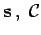
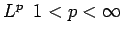
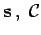
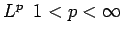

Eine Teilmenge A eines normierten Raumes  heißt
heißt
In der Analysis ist dies gerade der Satz von BOLZANO-WEIERSTRASS, weshalb man sagt, eine solche Menge besitze die BOLZANO-WEIERSTRASS-Eigenschaft.
Jede kompakte Menge ist abgeschlossen und beschränkt. Umgekehrt, ist der Raum  endlichdimensional, dann ist jede solche Menge auch kompakt. Die abgeschlossene Einheitskugel im normierten Raum
endlichdimensional, dann ist jede solche Menge auch kompakt. Die abgeschlossene Einheitskugel im normierten Raum  ist genau dann kompakt, wenn
ist genau dann kompakt, wenn  endlichdimensional ist. Zur Charakterisierung von relativkompakten Mengen in metrischen Räumen (Satz von HAUSDORFF über die Existenz eines endlichen
endlichdimensional ist. Zur Charakterisierung von relativkompakten Mengen in metrischen Räumen (Satz von HAUSDORFF über die Existenz eines endlichen  -Netzes) sowie in den Räumen  (Satz von ARZELA-ASCOLI) und  s. Lit. 12.18.
-Netzes) sowie in den Räumen  (Satz von ARZELA-ASCOLI) und  s. Lit. 12.18.